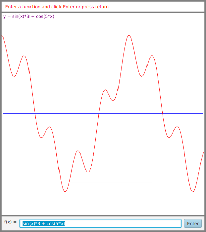

Solution for Programming Exercise 8.5
This page contains a sample solution to one of the exercises from Introduction to Programming Using Java.
Exercise 8.5:
This exercise uses the class Expr, which was described in Exercise 8.4 and which is defined in the source code file Expr.java. For this exercise, you should write a GUI program that can graph a function, f(x), whose definition is entered by the user. The program should have a text-input box where the user can enter an expression involving the variable x, such as x^2 or sin(x-3)/x. This expression is the definition of the function. When the user clicks an "Enter" button or presses return, the program should use the contents of the text input box to construct an object of type Expr. If an error is found in the definition, then the program should display an error message. Otherwise, it should display a graph of the function. (Recall: If you make a button into the default button for the window, then pressing return will be equivalent to clicking the button (see the end of Subsection 6.4.2).)
The program will need a Canvas for displaying the graph. To keep things simple, the canvas should represent a fixed region in the xy-plane, defined by -5 <= x <= 5 and -5 <= y <= 5. To draw the graph, compute a large number of points and connect them with line segments. (This method does not handle discontinuous functions properly; doing so is very hard, so you shouldn't try to do it for this exercise.) My program divides the interval -5 <= x <= 5 into 300 subintervals and uses the 301 endpoints of these subintervals for drawing the graph. Note that the function might be undefined at one of these x-values. In that case, you have to skip that point.
A point on the graph has the form (x,y) where y is obtained by evaluating the user's expression at the given value of x. You will have to convert x and y values in the range from -5 to 5 to the pixel coordinates that you need for drawing on the canvas. The formulas for the conversion are:
double a = ( (x + 5)/10 * width ); double b = ( (5 - y)/10 * height );
where a and b are the horizontal and vertical coordinates that you can use for drawing on the canvas. The values of width and height give the size of the canvas.
I wrote my solution using a nested subclass, GraphCanvas, of Canvas to represent the canvas where the function is graphed. The subclass has an instance variable, func, of type Expr that represents the function to be drawn, with a setter method that can be called to change the function. The value of func can be set to null to indicate that no function is available to be graphed. This will be true in the program when the user's input has been found to be illegal. The subclass has a draw() method that checks the value of func to decide what to draw; this method is called in the constructor and whenever the function is changed. If func is null, then the draw() method simply draws a message on the panel stating that no function is available. Otherwise, it draws a pair of axes and the graph of the function, and it displays the definition of the function as a string.
The interesting work in class GraphCanvas is done in the drawFunction() method, which is called by draw(). This function draws the graph of the function for -5 <= x <= 5. This interval on the x axis is divided into 300 subintervals. Since the length of the interval is 10, the length of each subinterval is given by dx, where dx is 10.0/300. The x values for the points that I want to plot are given by -5, -5+dx, -5+2*dx, and so on. Each x-value is obtained by adding dx to the previous value. For each x value, the y-value of the point on the graph is computed as func.value(x). As the points on the graph are computed, line segments are drawn to connect pairs of points (unless the y-value of either point is undefined). An algorithm for the drawFunction() method is:
Let dx = 10.0 / 300;
Let x = -5 // Get the first point
Let y = func.value(x)
for i = 1 to 300:
Let prevx = x // Save the previous point
Let prevy = y
Let x = x + dx // Get the next point
Let y = func.value(x)
if neither y nor prevy is Double.NaN:
draw a line segment from (prevx,prevy) to (x,y)
The method for drawing the line segment uses the conversion from graphing coordinates to pixel coordinates that is given in the exercise. By the way, more general conversion formulas can be given in the case where x extends from xmin to xmax and y extends from ymin to ymax. The general formulas are:
a = ( (x - xmin) / (xmax - xmin) * width ); b = ( (ymax - y) / (ymax - ymin) * height );
The formulas for a and b are of slightly different form to reflect the fact that a increases from 0 to width as x increases from xmin to xmax, while b decreases from height to 0 as y increases from ymin to ymax. You could improve the program by adding text input boxes where the user can enter values for xmin, xmax, ymin, and ymax.
The constructor for the GraphCanvas takes a parameter of type Expr that specifies an initial function to be graphed when the canvas is first created (or the parameter could be null if no initial function is to be displayed). I use this feature in my program to show a sample function when the program starts.
In the start() method, a BorderPane is used for the root of the scene graph. The center component is the large canvas that is used for graphing. A Label is placed in the top position; the label is used to display messages to the user, including error messages when the user's input is not valid. The bottom component is an HBox that contains the text input box for the user's input and the "Enter" button. I also added a label in front of the text input box that says "f(x) =". I did a great deal of tweaking of the user interface, using techniques from Chapter 6, but since this chapter is not about GUI programming, I won't discuss the tweaks here. You can check out the source code below to see what I did. Here is what the program window looks like when it first appears on the screen:

The start method also installs an ActionEvent handler for the button, written as a long lambda expression. The handler gets the string from the TextField. It tries to use this string to construct an object of type Expr. The constructor throws an IllegalArgumentException if the string contains an error, so the constructor is called in a try statement that can catch and handle the error. If an error occurs, then the error message in the exception object is displayed in the Label at the top of the window, and the graph is cleared. If no error occurs, the graph is set to display the user's function, and the Label is set to display the generic message, "Enter a function and click Enter or press return." The code for all this is:
Expr function; // The user's function.
try {
String def = functionInput.getText();
function = new Expr(def);
graph.setFunction(function);
message.setText(" Enter a function and press return.");
}
catch (IllegalArgumentException e) {
graph.clearFunction();
message.setText(e.getMessage());
}
import javafx.application.Application;
import javafx.stage.Stage;
import javafx.scene.Scene;
import javafx.scene.canvas.Canvas;
import javafx.scene.canvas.GraphicsContext;
import javafx.scene.layout.HBox;
import javafx.scene.layout.BorderPane;
import javafx.scene.layout.Priority;
import javafx.scene.control.Label;
import javafx.scene.control.Button;
import javafx.scene.control.TextField;
import javafx.scene.paint.Color;
/**
The SimpleGrapher program can draw graphs of functions input by the
user. The user enters the definition of the function in a text
input box. When the user presses return or clicks the "Enter" button,
the function is graphed. (Unless the definition contains an error.
In that case, an error message is displayed.)
The graph is drawn on a canvas which represents the region of the
(x,y)-plane given by -5 <= x <= 5 and -5 <= y <= 5. Any part of
the graph that lies outside this region is not shown. The graph
is drawn by plotting 301 points and joining them with lines. This
does not handle discontinuous functions properly.
An example function is graphed when the program starts.
This program requires the class Expr, which is defined in by a
separate file, Expr.java. That file contains a full description
of the syntax of legal function definitions, but the program
understands operators +, -, *, /, and ^ (where ^ represents
exponentiation), as well as common mathematical functions
such as sin(x) and ln(x).
*/
public class SimpleGrapher extends Application {
public static void main(String[] args) {
launch(args);
}
//---------------------------------------------------------------------------------
private GraphCanvas graph; // The Canvas that will display the graph.
// GraphCanvas is a subclass of Canvas that
// is defined as a static nested class.
private TextField functionInput; // A text input box where the user enters
// the definition of the function.
private Label message; // A label for displaying messages to the user,
// including error messages when the function
// definition is illegal.
/**
* Set up the GUI with a large canvas in the center where the functions
* are graphed, a label at the top for displaying messages, and
* an input box for the function below the canvas. Also adds an Enter
* button with an ActionEvent handler that graphs the function. The
* button is set to be the default button in the window, so that the
* user can also graph the function by pressing return.
*/
public void start(Stage stage) {
/* Create the components and set up event handling. The
* canvas is given an initial function to draw, and the
* textfield is initialized to show the definition of
* that function. */
graph = new GraphCanvas( new Expr("sin(x)*3 + cos(5*x)") );
message = new Label(" Enter a function and click Enter or press return");
functionInput = new TextField("sin(x)*3 + cos(5*x)");
Button graphIt = new Button("Enter");
graphIt.setDefaultButton(true);
graphIt.setOnAction( evt -> {
// Get the user's function definition from the box and use it
// to create a new object of type Expr. Tell the GraphPanel to
// graph this function. If the definition is illegal, an
// IllegalArgumentException is thrown by the Expr constructor.
// If this happens, the graph is cleared and an error message
// is displayed in the message label.
Expr function; // The user's function.
try {
String def = functionInput.getText();
function = new Expr(def);
graph.setFunction(function);
message.setText(" Enter a function and click Enter or press return.");
}
catch (IllegalArgumentException e) {
graph.clearFunction();
message.setText(e.getMessage());
}
functionInput.selectAll();
functionInput.requestFocus(); // Let's user start typing in input box.
} );
/* Create the layout. */
HBox bottom = new HBox(8, new Label("f(x) ="), functionInput, graphIt);
BorderPane root = new BorderPane();
root.setCenter(graph);
root.setTop(message);
root.setBottom(bottom);
/* Tweak the components to make the program more attractive. Add borders
* around the entire root pane and between the canvas and the top and bottom
* components. Adding some padding around the components in the bottom HBox. */
root.setStyle("-fx-border-color:gray; -fx-border-width:4px");
message.setTextFill(Color.RED); // User red text for the message.
message.setStyle("-fx-background-color:white; -fx-padding:7px; "
+ "-fx-border-color:gray; -fx-border-width:0 0 4px 0");
message.setMaxWidth(10000); // Required to make the label (and its border)
// extend the full width of the window.
bottom.setStyle("-fx-border-color:gray; -fx-border-width:4px 0 0 0; -fx-padding:8px");
HBox.setHgrow(functionInput, Priority.ALWAYS); // Allows functionInput to grow
// to fill the available space.
/* Finish setting up the window and make it visible. */
Scene scene = new Scene(root);
stage.setScene(scene);
stage.setResizable(false);
stage.setTitle("A Simple Function Grapher");
stage.show();
} // end start()
// -------------------------- Nested class ----------------------------
private static class GraphCanvas extends Canvas {
// A object of this class can display the graph of a function
// on the region of the (x,y)-plane given by -5 <= x <= 5 and
// -5 <= y <= 5. The graph is drawn very simply, by plotting
// 301 points and connecting them with line segments. The canvas
// is 600-by-600 pixels. The size could be changed by editing
// the definition in the constructor.
Expr func; // The definition of the function that is to be graphed.
// If the value is null, no graph is drawn.
GraphCanvas(Expr firstFunction) {
super(600,600); // Calls the constructor from the Canvas class.
func = firstFunction;
draw(); // Draw the canvas at startup.
}
public void setFunction(Expr exp) {
// Set the canvas to graph the function whose definition is
// given by the function exp.
func = exp;
draw();
}
public void clearFunction() {
// Set the canvas to draw no graph at all.
func = null;
draw();
}
public void draw() {
// Fill the canvas with white, then draw a set of axes
// and the graph of the function. Or, if func is null,
// display a message that there is no function to be graphed.
GraphicsContext g = getGraphicsContext2D();
g.setFill(Color.WHITE);
g.fillRect(0,0,getWidth(),getHeight());
if (func == null) {
g.setFill( Color.RED );
g.fillText("No function is available.", 30, 40);
}
else {
g.setFill( Color.PURPLE );
g.fillText("y = " + func, 5, 15);
drawAxes(g);
drawFunction(g);
}
}
void drawAxes(GraphicsContext g) {
// Draw horizontal and vertical axes in the middle of the
// canvas. A 5-pixel border is left at the ends of the axes.
double width = getWidth();
double height = getHeight();
g.setStroke(Color.BLUE);
g.setLineWidth(2);
g.strokeLine(5, height/2, width-5, height/2);
g.strokeLine(width/2, 5, width/2, height-5);
}
void drawFunction(GraphicsContext g) {
// Draw the graph of the function defined by the instance
// variable func. Just plot 301 points with lines
// between them. s
double x, y; // A point on the graph. y is f(x).
double prevx, prevy; // The previous point on the graph.
double dx; // Difference between the x-values of consecutive
// points on the graph.
dx = 10.0 / 300;
g.setStroke(Color.RED);
g.setLineWidth(1);
/* Compute the first point. */
x = -5;
y = func.value(x);
/* Compute each of the other 300 points, and draw a line segment
between each consecutive pair of points. Note that if the
function is undefined at one of the points in a pair, then
the line segment is not drawn. */
for (int i = 1; i <= 300; i++) {
prevx = x; // Save the coords of the previous point.
prevy = y;
x += dx; // Get the coords of the next point.
y = func.value(x);
if ( (! Double.isNaN(y)) && (! Double.isNaN(prevy)) ) {
// Draw a line segment between the two points.
putLine(g, prevx, prevy, x, y);
}
} // end for
} // end drawFunction()
void putLine(GraphicsContext g, double x1, double y1,
double x2, double y2) {
// Draw a line segment from the point (x1,y1) to (x2,y2).
// These values must be scaled to convert from coordinates
// that go from -5 to 5 to the coordinates that are needed
// for drawing on the canvas, which go from 0 to 600.
// coordinates of the corresponding pixels.
if (Math.abs(y1) > 10000 || Math.abs(y2) > 10000) {
// Only draw lines for reasonable y-values.
// This should not be necessary, but I'm not sure
// how GraphicsContext will handle very large values.
return;
}
double a1, b1; // Pixel coordinates corresponding to (x1,y1).
double a2, b2; // Pixel coordinates corresponding to (x2,y2).
double width = getWidth(); // Width of the canvas (600).
double height = getHeight(); // Height of the canvas (600).
a1 = (int)( (x1 + 5) / 10 * width );
b1 = (int)( (5 - y1) / 10 * height );
a2 = (int)( (x2 + 5) / 10 * width );
b2 = (int)( (5 - y2) / 10 * height );
g.strokeLine(a1,b1,a2,b2);
} // end putLine()
} // end nested class GraphCanvas
} // end class SimpleGrapher